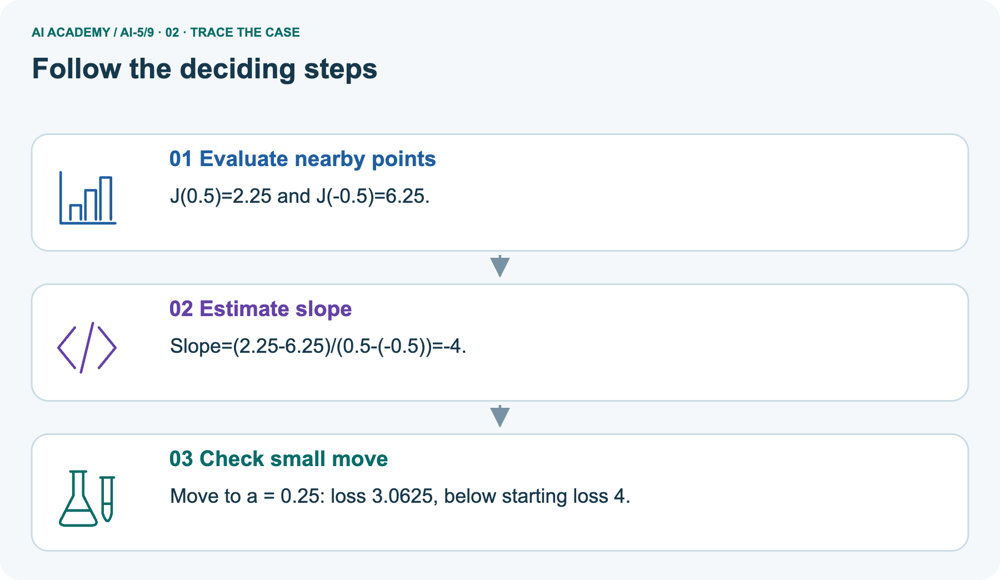
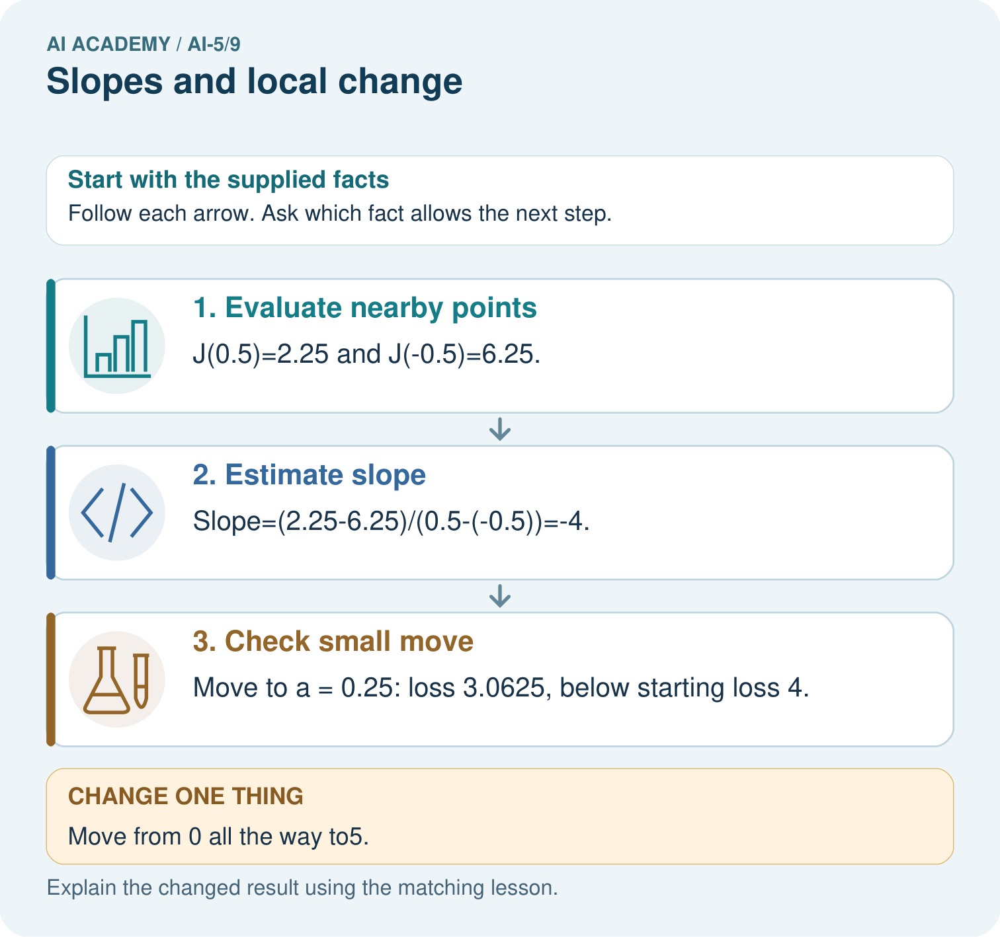
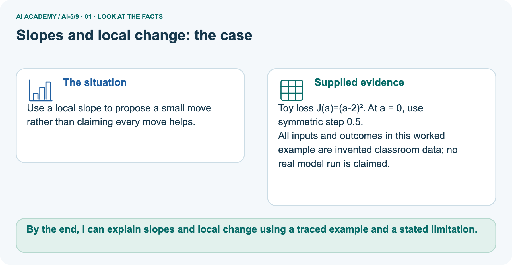
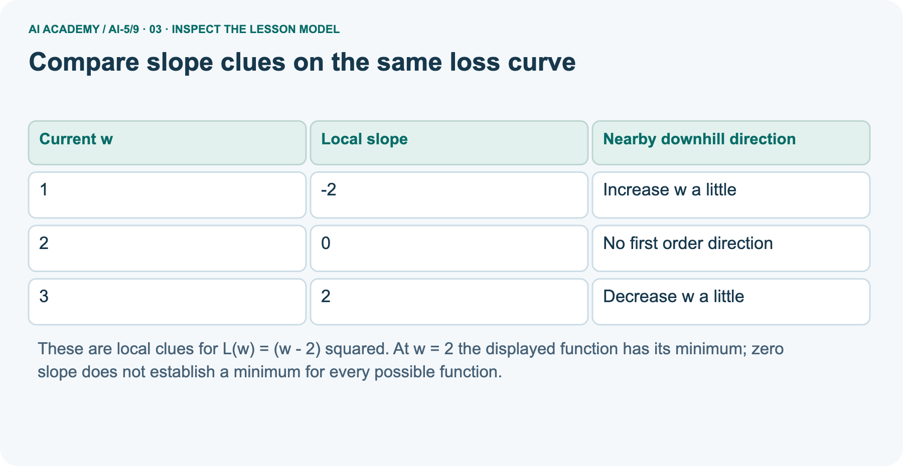
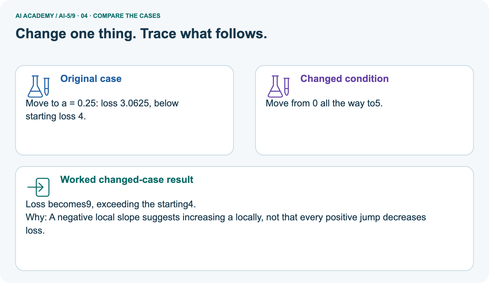
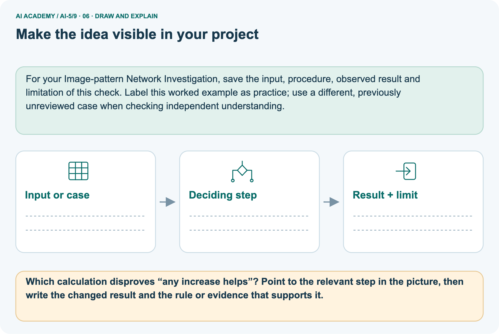

AI Academy · Level 5 · Grade 10 · Week 9 · Teacher guide
Slopes and local change
Learn to understand, design, build, test and explain AI systems responsibly.
Project: Image-pattern Network Investigation
THE CONNECTED WEEK
Keep function,centre and spacing visible.
Use exact nearby-value calculations and labelled curves;compare local direction with the actual loss after each proposed move.
Keep one habit: Assess the independent denominator,slope,small move and overshoot explanation using checked keys.
Main lesson · Section 1
Prepare the connected mathematical investigation
Keep explanation,shared practice and independent evidence distinct.
Target and main teaching plan
Primary target: Calculate an average rate of change over a stated interval
| Session | Sequence and minutes | Resources |
|---|---|---|
| Session 1 · Understand · 45 min | 0–7: recall and prerequisite; 7–15: inspect the concrete case and predict; 15–30: teacher models the worked trace; 30–40: learners explain a step using the text and visual; 40–45: check the core idea. | Use Your mission, Notice the evidence, See how it works, Words that unlock the idea and Follow a worked example; record recall in the workbook. |
| Session 2 · Practise · 45 min | 0–5: retrieve the procedure; 5–15: W2 completion practice; 15–23: explain and check with a partner; 23–30: each learner answers the misconception check; 30–40: targeted reteaching or a harder variation; 40–45: prepare the investigation. | Use Find and repair a mistake, Practise together and Build your understanding; use the matching workbook W2 and Individual reasoning check. |
| Session 3 · Investigate and transfer · 45 min | 0–5: retrieve the decision rule; 5–20: investigate or trace; 20–30: start the independent case; 30–38: connect the project; 38–43: act on feedback; 43–45: plan the return check. | Use Run the investigation, Connect your project and Try a new case independently. Allow extra time for the full task set. When code is supplied, use the examples in See how it works or Follow a worked example and the browser lab in Supported practice, repair and portfolio. |
This is a starting allocation of 135 minutes, not a validated duration. Preserve all named topics. Schedule extra time for connected examples, the full investigation, independent cases and project building.
Repeated copies of a case share one recorded attempt; they are not new evidence.
Preparation and prerequisite
Printed lesson and workbook; paper and pencil
Calculator and optional local Python 3 editor; no packages or AI accounts needed
Use the fictional examples supplied; prepare the fresh retry before class
The residual is 2 and the squared error is 4.
Opening retrieval
Without opening the old lesson, explain one key idea from Loss functions. Give an example and a mistake that the idea helps you avoid.
Look for: Calculate per-example squared error and mean squared error
Reference example, not the only acceptable wording: Teacher explanation: Residuals are -1 and 2, squares 1 and 4, MSE 2.5.
Without opening the old lesson, explain one key idea from Forward passes by hand. Give an example and a mistake that the idea helps you avoid.
Look for: Record scores and activations in dependency order
Reference example, not the only acceptable wording: Teacher explanation: z = [-3, 3], h = [0, 3], y = -5.
Without opening the old lesson, explain one key idea from Bias terms and decision boundaries. Give an example and a mistake that the idea helps you avoid.
Look for: Calculate a weighted score with a bias term
Reference example, not the only acceptable wording: Teacher explanation: Weighted sum 10 - 4 = 6; bias -3; score 3; prediction 1. Add the bias once after summing.
Pictured end goal
By the end, I can explain slopes and local change using a traced example and a stated limitation.
Earlier wording, alternatives and picture transcripts
Teach the learning cycle
Retrieval answer guidance
Loss functions
Forward passes by hand
Bias terms and decision boundaries
Introduce rate of change through finite differences, with no assumed calculus fluency. For the compact alternative schedule, use two 45-minute sessions, a calculator and a labelled parameter-versus-loss sketch.
Reserve the word local for a stated centre and nearby values.
Outcomes
Calculate an average rate of change over a stated interval
Estimate a local slope with nearby loss values
Explain the limits of a local direction clue
Preparation
Prerequisite answer
End goal for the pictorial case
This added worked case illustrates the week’s main idea. Retain all original and connected topics; schedule its practice within the teaching cycle.
Main lesson · Section 2
Teach local slopes with explicit horizontal gaps
Keep spacing,proposed update size and function identity distinct.
Main definition,complete estimates and guided key
Let a one-example model predict w and let its target be 2. Its squared loss is L(w) = (w - 2) squared. Here w is the parameter we vary, not a new data example. L is a nonnegative function of that parameter.
From w = 0 to w = 1, the loss changes by -3 while w changes by 1. The average slope is -3. From w = 1 to w = 2 it is -1. The curve does not have one fixed slope everywhere.
Near w = 1, use two symmetric nearby values: 0.9 and 1.1. Their losses are 1.21 and 0.81. Change in loss divided by change in w gives (0.81 - 1.21) / (1.1 - 0.9) = -2.
This symmetric estimate describes change near the centre w = 1.
For this quadratic, the symmetric estimate equals the exact slope 2(w - 2) in exact arithmetic. Numerical estimates for other functions are generally approximate.
Smaller steps can reduce some approximation errors, but extremely small steps can suffer from computer rounding.
| Centre w / symmetric step h | L(w−h) | L(w+h) | Loss difference | Parameter difference 2h | Estimated local slope |
|---|---|---|---|---|---|
| 0 /0.5 | 6.25 | 2.25 | -4 | 1 | -4 |
| 1 /0.1 | 1.21 | 0.81 | -0.4 | 0.2 | -2 |
| 2 /0.1 | 0.01 | 0.01 | 0 | 0.2 | 0 |
| 3 /0.1 | 0.81 | 1.21 | 0.4 | 0.2 | 2 |
The symmetric formula is[L(w+h)−L(w−h)]/(2h), centred at w. Its h is a measurement spacing for estimating slope, not a training learning rate. At w1, h.1, the full horizontal gap is.2, not.1. For this quadratic the symmetric estimate matches 2(w−2)in exact arithmetic; other functions generally have approximation error. Extremely small spacing can also lose numerical precision.
Record centre, spacing, both losses and the full denominator.
Guided: L(2.9) = 0.81 and L(3.1) = 1.21, so slope is 0.4 / 0.2 = 2. A small decrease in w lowers this loss. Exit: at w = 1 slope is negative, but increasing w to 4 raises loss from 1 to 4.
Complete pictured small-move/large-jump comparison
Use a local slope to propose a small move rather than claiming every move helps.
Toy loss J(a)=(a-2)². At a = 0, use symmetric step 0.5.
All inputs and outcomes in this worked example are invented classroom data; no real model run is claimed.
The picture writes the same main quadratic with letters J(a)=(a−2)². At a0, h.5:nearby losses 6.25 and2.25 give slope−4. A small increase to.25 gives3.0625, below starting 4; the jump to5 gives9, above 4. The local negative slope supports testing a small increase, not any increase. The independent exercise uses J(a)=(a+1)² instead; do not transfer the pictured optimum or numbers to it.
Trace the local clue and overshoot



Read the picture one step at a time
A slope describes how the loss changes near the current parameter. The symmetric calculation compares equal small moves on either side. Its negative result suggests a small increase may help at zero.
It does not promise every increase helps: jumping to five passes the optimum at two and produces a larger loss. Check the new loss after each proposed step.
A finite difference approximates local change; numerical precision and nonsmooth points need care in more complex objectives.
Change: Move from 0 all the way to5.
Prediction: Loss becomes 9, exceeding the starting 4.
Reason: A negative local slope suggests increasing a locally, not that every positive jump decreases loss.
Labelled local and stationary-point limits

Earlier wording, alternatives and picture transcripts
| Term | Meaning |
|---|---|
| Slope | Change in output divided by change in input over a stated interval |
| Local change | Change considered near a particular input or parameter value |
| Step size | The amount by which an input or parameter is changed |
| Stationary point | A point where a differentiable function has zero local slope |
Compare slope clues on the same loss curve
Model the reasoning aloud
Use the complete worked example below before asking learners to complete W2. Reveal a small part, invite a prediction, then explain the deciding step.
These teacher notes contain solutions; do not reveal the independent case answer during modelling.
Compare slope clues on the same loss curve
| Thinking move | Teacher prompt |
|---|---|
| Plan | What is given? What is the question? Which procedure fits these facts? |
| Do | Point to each input and intermediate step in the worked trace. Name the rule that allows the next step. |
| Check | Does the output answer the question? Which assumption or limitation prevents a larger claim? |
Use the diagram and verbal explanation together. Ask learners to match a sentence to a specific visual step; do not assign learners fixed visual or auditory learning styles.
A pictorial worked case: Slopes and local change
The facts we will use



Why this result follows
What this example does not establish
Change one thing in the pictured case
Ask while showing the picture
Cover the result. Ask learners to name the inputs and predict the next step. Uncover one step, connect the icon to the actual procedure, and explain its evidence. Then change the supplied condition and compare.
The picture is a representation; it does not document execution of a real AI model.
Main lesson · Section 3
Model a step,then remove help
Collect each learner’s reasoning before showing a key.
Current completion task and checked reasoning
Completion task: At centre w = 0, use step 0.5. Calculate L(-0.5), L(0.5) and the symmetric slope.
Teacher check: Teacher explanation: Losses are 6.25 and 2.25. Denominator is 1, giving slope -4.
Start by identifying the given inputs together. Leave the intermediate steps blank. If needed, model one step, then withdraw that help on the next step. Move to a full trace only when the partial trace is understood.
For partners, alternate explainer and checker; collect a response from every learner before discussion.
Individual misconception check
Use the worked case for Slopes and local change. Proposed explanation: “Divide by the step only”. Decide whether this explanation is supported. Point to the step or supplied fact that decides; explain your repair if needed.
Expected correction: A symmetric comparison spans from centre minus step to centre plus step, a width of twice the step.
Collect explanations, not only yes/no votes. If a misunderstanding is common, re-model the relevant step for the class.
If it affects a few learners, give a short targeted group explanation while others solve a more demanding variation.
Pictured reasoning and changed case
Which calculation disproves “any increase helps”? Point to the relevant step in the picture, then write the changed result and the rule or evidence that supports it.
J(5)=(5-2)²=9>J(0)=4. The local direction is useful only with an appropriately sized step and verification. Changed-case check: Loss becomes 9, exceeding the starting 4.
A negative local slope suggests increasing a locally, not that every positive jump decreases loss.
Changed-case reasoning: Loss becomes 9, exceeding the starting 4. A negative local slope suggests increasing a locally, not that every positive jump decreases loss.
Collect each learner’s explanation before discussion. Use the first missing connection between input, deciding step and result to choose support. This question is worked-case practice, not fresh mastery evidence.
Accessible support and extension
Use See how it works and Follow a worked example. Collect a prediction before revealing its result; ask the learner to point to each intermediate fact.
Provide an axis label and the fraction change in loss over change in parameter.
Extension: algebraically expand the symmetric difference for (w - 2) squared to recover 2(w - 2), noting exact arithmetic versus floating-point computation.
Earlier wording, alternatives and picture transcripts
| Time or stage | Teacher action |
|---|---|
| Session 1 start to 7 minutes | Retrieve squared loss and distinguish parameter w from an example input. |
| 7 to 18 minutes | Build the five-row table and sketch the curve. Calculate slopes across two different intervals. |
| 18 to 32 minutes | Complete W1 and the worked symmetric estimate near 1. Emphasise denominator 2 times step. |
| 32 to 45 minutes | Run or trace the optional code, complete W2 and the guided case. |
| Session 2 start to 8 minutes | Compare small changes with jumps across the minimum using W3. |
| 8 to 20 minutes | Use F(w) to challenge zero-slope claims and complete W5. |
| 20 to 35 minutes | Collect W4 independently, including interval arithmetic and the oversized-step counterexample. |
| 35 to 45 minutes | Use the exit response and a fresh retry to check direction, scale and stated limits. |
Reduce help deliberately
Individual reasoning check
Pictorial practice question
Reasoned teacher answer
Main lesson · Section 4
Run the complete supplied investigation
Separate predictions,actual runs and paper traces.
Complete inputs,expected results and limits
Main estimates and complete probes as supplied. W3 from3to2.9 gives.81, butto−1 gives9, bothdecreasesparameter. W5F0=1, F.1=.9801so stationarydoesnotimplyminimum. Independentcentre1, h.25:losses 3.0625 and5.0625, difference 2/gap.5=slope 4. Small1→.9 helps4→3.61; jumpto−4 gives9 andovershoots. Require function/centre/spacing/denominator and post-move loss, not only direction.
Diagnose the current misconceptions
Divide by the step only: A symmetric comparison spans from centre minus step to centre plus step, a width of twice the step.
Negative loss slope means negative loss: The slope describes change; squared loss itself remains nonnegative.
Zero slope always means finished: Stationary points need additional evidence; some are not minima.
Use Run the investigation for the evidence ledger. Add a boundary or missing-input case and record the expected response before checking. More successful repeats of one case do not establish wider coverage.
Choose accessible support
| What the response shows | Next teaching action |
|---|---|
| Missing or misread facts | Read the case aloud, mark supplied versus unknown facts, and let the learner restate it. |
| Wrong procedure | Return to the deciding step in the worked case. Contrast it with the proposed incorrect explanation. |
| Arithmetic or implementation error | Trace intermediate values or lines; preserve the first mismatch and retry that step. |
| Correct result without a reason | Ask for a trace and a changed case before marking independent understanding. |
| An unsupported wider claim | Ask which supplied evidence supports the claim and which further observation would be needed. |
Offer an oral explanation, drawing, enlarged visual or fewer examples when that removes a reading/writing barrier. Keep the same reasoning goal.
Stretch secure learners by changing a boundary or assumption and asking them to defend the effect, not simply by assigning more of the same questions.
Earlier wording, alternatives and picture transcripts
Match the support to the first error
Main lesson · Section 5
Assess the new schema or calculation transfer
Keep the selected answer private until after a first attempt.
Selected independent task and checked answer
Selected case: Let J(a) = (a + 1) squared. At a = 1 use step 0.25 to find the symmetric slope. Compare J(1) with J(0.9), then explain why moving to -4 does not follow safely from the slope clue.
Teacher explanation: J(0.75) = 3.0625; J(1.25) = 5.0625; slope is 2 / 0.5 = 4. J(1) = 4 and J(0.9) = 3.61, so a small decrease helps. J(-4) = 9: a large decrease overshoots.
Judge explanation,trace and limits
| Dimension | Evidence required |
|---|---|
| Explanation | Names the applicable idea or procedure and ties it to the supplied facts. |
| Trace and result | Preserves the given inputs and shows the relevant intermediate steps; distinguishes a prediction from an observed execution. |
| Limits | States the assumptions, missing evidence or conditions under which the result would change. |
Record each dimension as not yet, with support, or independent. Accept a valid alternative procedure with a defensible trace.
Do not penalise an honestly recorded model failure if the learner correctly explains its evidence and limits.
Give one usable repair
Name the earliest unsupported step and give one action to repair it. Have the learner make that repair now and explain why. Then assess the relevant skill on a fresh, fully specified case.
Confirm it was not previously practised with feedback; solve and check the new case before assigning it. A follow-up design prompt is a starting brief, not automatically an equivalent test.
W1 Measure an interval slope
For L(w) = (w - 2) squared, calculate the average slope from w = 0 to w = 2. Compare it with the local slope at w = 2.
Teacher explanation: Average slope is (0 - 4) / 2 = -2. The local slope at 2 is zero. They describe different locations or intervals.
W2 Check a symmetric estimate
At centre w = 0, use step 0.5. Calculate L(-0.5), L(0.5) and the symmetric slope.
Teacher explanation: Losses are 6.25 and 2.25. Denominator is 1, giving slope -4.
W3 Challenge a large step
Starting at w = 3, compare loss after moving to 2.9 and after moving to -1. Both moves decrease w.
Teacher explanation: Initial loss is 1; at 2.9 it is 0.81; at -1 it is 9. The small move helps, the large move overshoots.
W5 Limit zero slope evidence
For F(w) = (w squared - 1) squared, compare F(0) and F(0.1). Does zero local slope at zero prove a minimum?
Teacher explanation: F(0) = 1 and F(0.1) = 0.9801. Nearby loss is lower, so zero slope alone does not prove a minimum.
Earlier wording, alternatives and picture transcripts
Guided and exit questions
Guided: L(2.9) = 0.81 and L(3.1) = 1.21, so slope is 0.4 / 0.2 = 2. A small decrease in w lowers this loss. Exit: at w = 1 slope is negative, but increasing w to 4 raises loss from 1 to 4.
W1 Measure an interval slope
W2 Check a symmetric estimate
W3 Challenge a large step
W4 Estimate a new curve independently
Let J(a) = (a + 1) squared. At a = 1 use step 0.25 to find the symmetric slope. Compare J(1) with J(0.9), then explain why moving to -4 does not follow safely from the slope clue.
Teacher explanation: J(0.75) = 3.0625; J(1.25) = 5.0625; slope is 2 / 0.5 = 4. J(1) = 4 and J(0.9) = 3.61, so a small decrease helps. J(-4) = 9: a large decrease overshoots.
W5 Limit zero slope evidence
Independent assessment and fresh retry
W4 requires losses 3.0625 and 5.0625, slope 4, and the finite-step limitation. Fresh retry: K(c) = (c - 3) squared at c = 2, step 0.5, uses losses 2.25 and 0.25 and slope -2. Moving to 2.1 gives loss 0.81 rather than 1.
Assess independent transfer
Selected case answer
Feedback that the learner uses
Main lesson · Section 6
Connect,support and revisit the mathematics
Use the saved evidence to choose the next step.
Project and next-week bridge
Add a labelled slopes and local change evidence sheet to Image-pattern Network Investigation. Show how you can calculate an average rate of change over a stated interval.
Use the supplied fictional case and keep its inputs, intermediate steps, calculation or prediction, and limitation. Connect this record to last week’s record; a matching answer without a trace is insufficient.
Provide an axis label and the fraction change in loss over change in parameter.
Extension: algebraically expand the symmetric difference for (w - 2) squared to recover 2(w - 2), noting exact arithmetic versus floating-point computation.
Week 10 extends local slopes to several parameters.
Retain the project ledger and assess a changed case after support. Check the relevant prerequisite before carrying this component forward.
For your Image-pattern Network Investigation, save the input, procedure, observed result and limitation of this check.
Label this worked example as practice; use a different, previously unreviewed case when checking independent understanding.
Delayed return and support record
Suggested return points in this level: ai-5/10, ai-5/12, ai-5/15. Use actual classroom dates, adjusting for holidays and gaps. One, three and six teaching weeks are scheduling choices, not a claimed optimal spacing.
At a delayed check, ask for the idea from memory and a changed application. Compare with the earlier independent response and record support used.
For a new level, revisit the previous capstone before checking the new prerequisites.
| Record | Teacher evidence |
|---|---|
| Learner code and date | |
| Concept and case used; prior exposure | |
| Explanation / trace / limits | |
| Support and first repair | |
| Changed case and delayed outcome | |
| Next teaching action |
Use the evidence to choose reteaching or the next step. A completed page, confidence rating or attractive project does not by itself demonstrate understanding.
Earlier wording, alternatives and picture transcripts
Plan the delayed return
Project evidence from this case
Reference bank and extra practice
Choose the reference that helps your next step.
Reference · Alternative planning checklist
Reference · Section 7
Reference · Alternative planning checklist
Use alongside the main route when helpful.
Planning,assessment and project reminders
Teaching target: Calculate an average rate of change over a stated interval
Prepare the labelled worked-case picture, the matching workbook, fictional input cards and a place for individual responses. Check a local Python 3 environment before class; have a paper-trace version ready.
| Session | Plan | Resources |
|---|---|---|
| Session 1 · Understand · 45 min | 0–7: recall and prerequisite; 7–15: inspect the concrete case and predict; 15–30: teacher models the worked trace; 30–40: learners explain a step using the text and visual; 40–45: check the core idea. | Use Your mission, Notice the evidence, See how it works, Words that unlock the idea and Follow a worked example; record recall in the workbook. |
| Session 2 · Practise · 45 min | 0–5: retrieve the procedure; 5–15: W2 completion practice; 15–23: explain and check with a partner; 23–30: each learner answers the misconception check; 30–40: targeted reteaching or a harder variation; 40–45: prepare the investigation. | Use Find and repair a mistake, Practise together and Build your understanding; use the matching workbook W2 and Individual reasoning check. |
| Session 3 · Investigate and transfer · 45 min | 0–5: retrieve the decision rule; 5–20: investigate or trace; 20–30: start the independent case; 30–38: connect the project; 38–43: act on feedback; 43–45: plan the return check. | Use Run the investigation, Connect your project and Try a new case independently. Allow extra time for the full task set. When code is supplied, use the examples in See how it works or Follow a worked example and the browser lab in Supported practice, repair and portfolio. |
Before class, solve the supported practice: At centre w = 0, use step 0.5. Calculate L(-0.5), L(0.5) and the symmetric slope.
Reasoned practice answer: Teacher explanation: Losses are 6.25 and 2.25. Denominator is 1, giving slope -4.
Check every learner before discussion: Use the worked case for Slopes and local change. Proposed explanation: “Divide by the step only”. Decide whether this explanation is supported.
Point to the step or supplied fact that decides; explain your repair if needed.
Misconception repair: A symmetric comparison spans from centre minus step to centre plus step, a width of twice the step.
Support: read the exact case aloud, enlarge the labelled picture, supply input cards and model only the first deciding step. Accept a spoken explanation or drawing; retain the reasoning goal.
Extension: Move from 0 all the way to5. Require a prediction and a reason before comparing. Expected result: Loss becomes 9, exceeding the starting 4.
Reason: A negative local slope suggests increasing a locally, not that every positive jump decreases loss.
Independent assessment: withhold the reserved answer until the learner has attempted the new case. Record support separately from correctness.
| Criterion | Not yet | With support | Independent |
|---|---|---|---|
| Explanation | Names an answer without a deciding fact | Uses a hint to link fact and decision | Explains the deciding fact in own words |
| Trace or test | Cannot connect input and result | Completes steps with prompts | Traces or tests a changed case accurately |
| Limits and revision | Claims more than evidence supports | Names a limit after a prompt | States a defensible limit and useful next test |
Project checkpoint: Make a transparent first version. Keep a trace of how one input becomes an output; explain the rule or learned component.
Use the weekly teacher answer for topic-specific reasoning. A saved progress tick is an activity record; judge mastery from the learner’s explanation and evidence.
Reference · Feedback,labs and repair paths
Reference · Section 8
Reference · Feedback,labs and repair paths
Retain the first attempt and the evidence used for a repair.
Feedback and record guidance
Use the two formative questions as supported practice, not as independent mastery scores. Discuss the deciding evidence rather than accepting a guessed selection.
The feedback comes from the reviewed public worked case. Do not reveal the separately reserved independent teacher answer until the learner has attempted that case.
Ask students to predict before running code. Preserve errors and actual outputs; collect a changed test and an explanation. The branch-boundary and indexing lessons deliberately include failure cases.
Use the earlier worked-explanation links to address a specific missing building block, then return to the current question. Adapt this suggestion after observing the learner; it is not an automatic diagnosis.
Collect the completed-work portfolio as evidence. Record support separately from correctness, and assess explanation, trace/test and limitations. Progress ticks and quiz selections alone do not establish mastery.
Reference · Teach with the six pictures
Reference · Section 9
Reference · Teach with the six pictures
Choose one picture for a particular reasoning move.
01. Slopes and local change: the case



Use a local slope to propose a small move rather than claiming every move helps. Supplied facts: Toy loss J(a)=(a-2)². At a = 0, use symmetric step 0.5.
All inputs and outcomes in this worked example are invented classroom data; no real model run is claimed.
Point to the given fact that matters most. Explain why it matters.
Teacher prompt: Point to the given fact that matters most. Explain why it matters. Ask learners to describe one label or arrow in ordinary words. Use the adjacent transcript if the image is difficult to see.
02. Follow the deciding steps
Evaluate nearby points: J(0.5)=2.25 and J(-0.5)=6.25. → Estimate slope: Slope=(2.25-6.25)/(0.5-(-0.5))=-4. → Check small move: Move to a = 0.25: loss 3.0625, below starting loss 4.
Point to each numbered stage and explain which recorded input it uses.
Teacher prompt: Point to each numbered stage and explain which recorded input it uses. Ask learners to describe one label or arrow in ordinary words. Use the adjacent transcript if the image is difficult to see.
03. Compare slope clues on the same loss curve



Compare slope clues on the same loss curve. 1 | -2 | Increase w a little. 2 | 0 | No first order direction. 3 | 2 | Decrease w a little
Read the labels and values. Explain the relationship the model shows.
Teacher prompt: Read the labels and values. Explain the relationship the model shows. Ask learners to describe one label or arrow in ordinary words. Use the adjacent transcript if the image is difficult to see.
04. Change one thing. Trace what follows.



Original case: Move to a = 0.25: loss 3.0625, below starting loss 4. Changed condition: Move from 0 all the way to5. Expected result: Loss becomes 9, exceeding the starting 4.
Reason: A negative local slope suggests increasing a locally, not that every positive jump decreases loss.
Predict before checking the worked changed-case result. Name what changed and what the supplied facts allow you to conclude.
Teacher prompt: Predict before checking the worked changed-case result. Name what changed and what the supplied facts allow you to conclude. Ask learners to describe one label or arrow in ordinary words.
Use the adjacent transcript if the image is difficult to see. Changed-case reasoning: A negative local slope suggests increasing a locally, not that every positive jump decreases loss.
05. Connect the explanation to its limit


A slope describes how the loss changes near the current parameter. The symmetric calculation compares equal small moves on either side. Its negative result suggests a small increase may help at zero.
It does not promise every increase helps: jumping to five passes the optimum at two and produces a larger loss. Check the new loss after each proposed step.
Limit: A finite difference approximates local change; numerical precision and nonsmooth points need care in more complex objectives.
Explain the case, then point to a limit on the claim.
Teacher prompt: Explain the case, then point to a limit on the claim. Ask learners to describe one label or arrow in ordinary words. Use the adjacent transcript if the image is difficult to see.
Keep the stated scope: A finite difference approximates local change; numerical precision and nonsmooth points need care in more complex objectives.
06. Make the idea visible in your project



For your Image-pattern Network Investigation, save the input, procedure, observed result and limitation of this check.
Label this worked example as practice; use a different, previously unreviewed case when checking independent understanding. Draw your input, deciding step, result and limit.
Supported question: Which calculation disproves “any increase helps”? Point to the relevant step in the picture, then write the changed result and the rule or evidence that supports it.
Draw your project trace and justify the deciding step using evidence.
Teacher prompt: Draw your project trace and justify the deciding step using evidence. Ask learners to describe one label or arrow in ordinary words. Use the adjacent transcript if the image is difficult to see.
Supported practice key: J(5)=(5-2)²=9>J(0)=4. The local direction is useful only with an appropriately sized step and verification. Changed-case check: Loss becomes 9, exceeding the starting 4.
A negative local slope suggests increasing a locally, not that every positive jump decreases loss.
Earlier wording, alternatives and picture transcripts
Use one picture at a time. Hide a worked result before asking for a prediction, then reveal it for feedback. These are supported teaching cases; retain the separate independent assessment for a fresh first attempt.